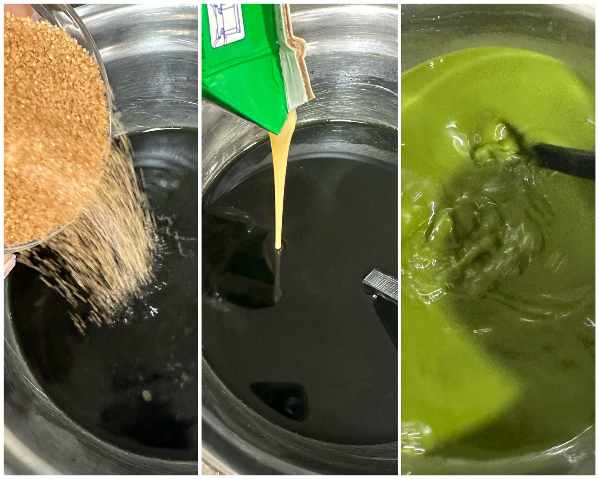

Try this Thai Green Tea drink for a taste of Thailand in your own home! Instead of the traditional orange color of the Thai tea, Thai Green Milk Tea has a minty green color. It combines Green Thai tea mix with other ingredients to creat a unique drink. This refreshing drink is perfect for hot summer days or when you want something special to satisfy your cravings.
Step 1 - Gather Ingredients
Green Thai Milk Tea ingredients by Ngoc Anh Tran, 2024. .
Main ingredients for 3 to 5 servings
- 50 grams Thai Green Tea mix
- 1 liter boiling water
- 150 - 200 milk of choice (recommend evaporated milk)
- 100 grams sugar
- 200 grams condense milk
- 1 teaspoon of salt
- 200 grams ice
Step 2 - Brew Tea
Brew and strain Thai Green Tea by Ngoc Anh Tran, 2024. .
- Add Thai Green Tea mix to boiling water in a close container or pot.
- After 15 to 25 minutes depends on how strong the brew that you want, strain tea and press lightly to prevent bitterness.
Step 3 - Add sweetness

Green Thai Milk Tea by Ngoc Anh Tran, 2024. .
- With the strained tea still warm, add sugar, condense milk, and salt to taste. Stir until all combine.
- Then add evaporated milk or milk of choice. Adjust the sweetness and creaminess to your liking.
Step 4 - Cool and preserve drink
Green Thai Milk Tea by Ngoc Anh Tran, 2024. .
- Add ice and stir well until it melt. This helps preserve the tea taste and aroma.
- Poor into a container and keep in refrigerator for at least 6 hours before serve for the best result.
Step 5 - Enjoy !

Green Thai Milk Tea drink by Pexels.
- Serve with ice and enjoy your Thai Green Milk Tea.
- Add a spash of milk on top for the aesthetic look.